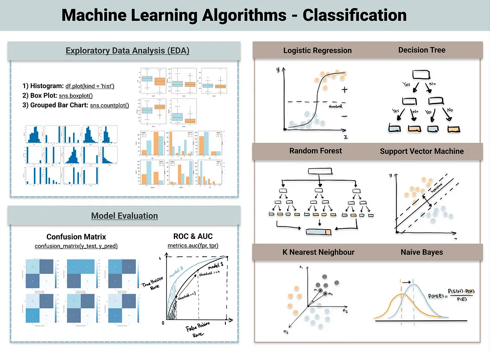
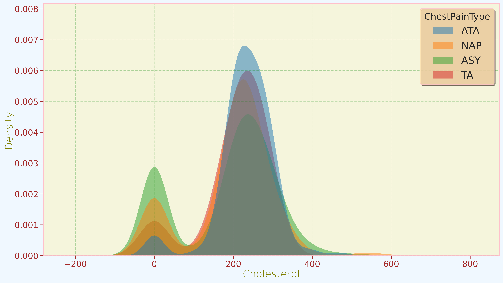
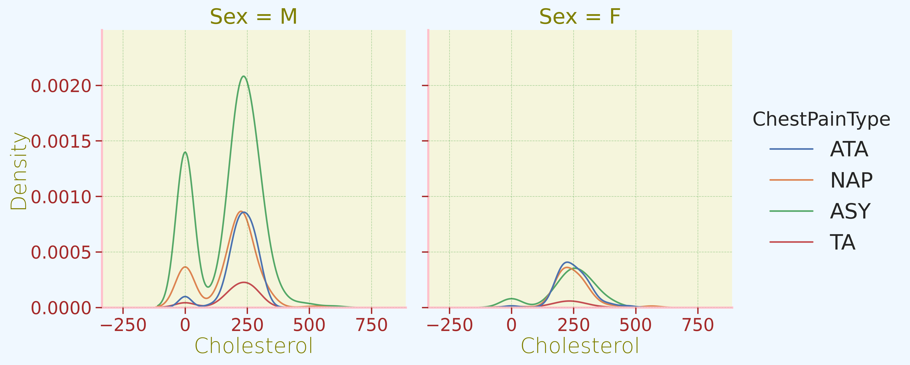
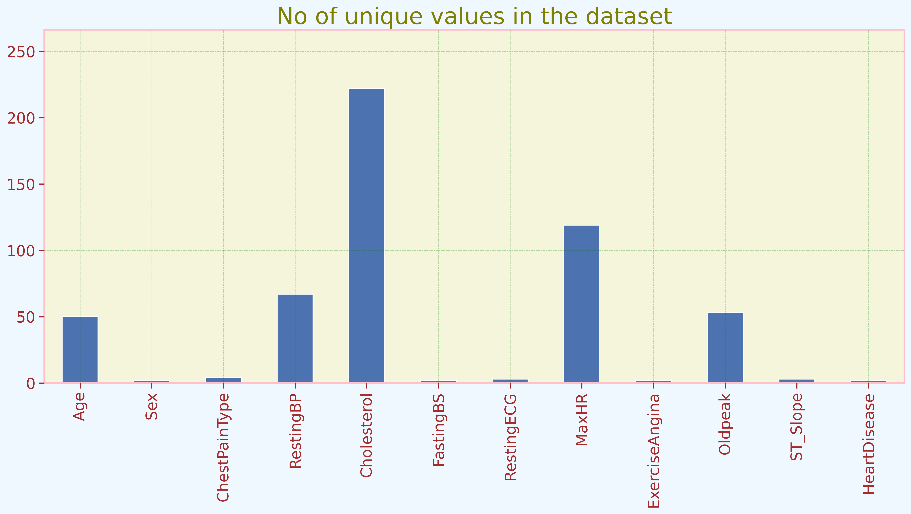
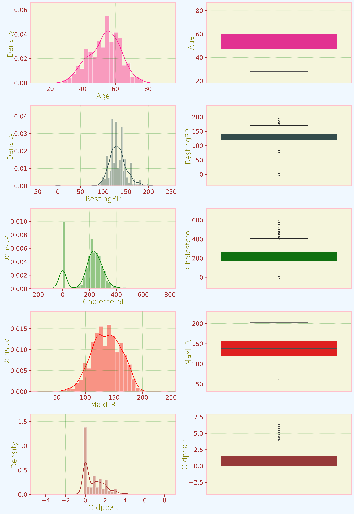
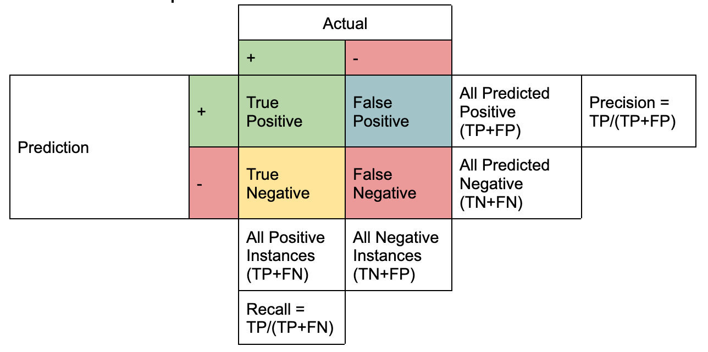
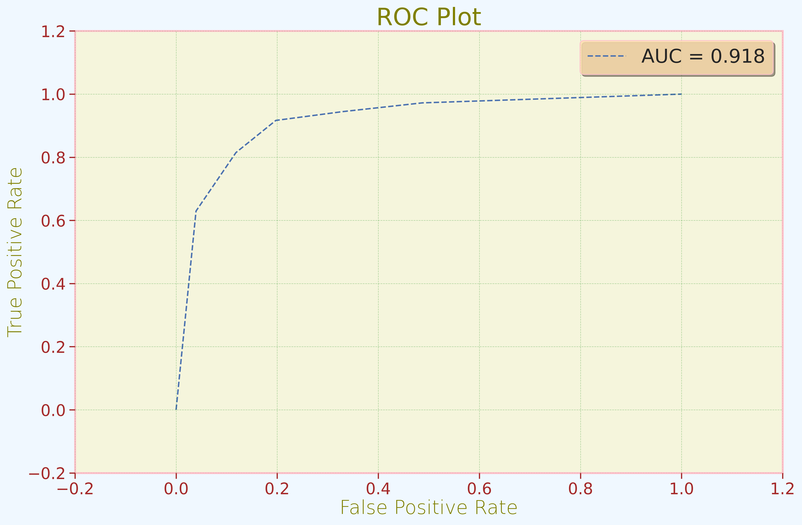
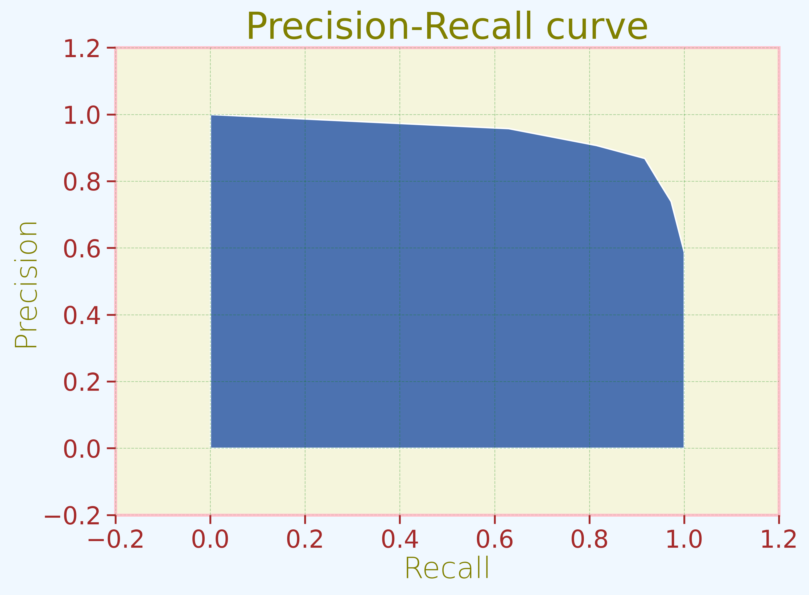

import pandas as pd
import numpy as np
import seaborn as sns
import matplotlib.pyplot as plt
from sklearn.metrics import roc_curve, precision_recall_curve
from sklearn.metrics import confusion_matrix, roc_auc_score, roc_curve, f1_score, accuracy_score
from sklearn.metrics import make_scorer, precision_score, precision_recall_curve
from sklearn.metrics import recall_score
from sklearn.preprocessing import StandardScaler
import warnings
warnings.filterwarnings('ignore')
Contents:
Introduction to Classification.
Different types of classification.
Example of Linear Regression with Heart Failure Prediction dataset.
Data Visualization
Data processing
Model implementation
Evaluation metrics implementation
Introduction to Classification
In the dynamic world of machine learning, classification stands out as a pivotal concept, providing the ability to categorize and interpret data for a wide array of applications. Whether you’re looking to filter spam emails, identify diseases from medical data, or recognize handwritten digits, classification algorithms are your go-to tools. In this blog post, we’ll delve into what classification is in machine learning, its significance, and how it’s transforming industries.
Defining Classification in Machine Learning
At its core, classification is the process of recognizing, understanding, and grouping data into predefined categories or subgroups. It’s like having a smart assistant that can look at a new piece of data and tell you which group it belongs to based on its characteristics. This task is accomplished through the analysis of historical data, which serves as a training ground for machine learning models.
The Power of Predefined Categories
The magic of classification lies in these predefined categories. Think of them as labels, such as “spam” and “non-spam” for emails, “fraudulent” and “legitimate” for financial transactions, or “cat” and “dog” for image recognition. The ability to organize data into these categories enables decision-making, automation, and insights that would otherwise be impractical or impossible to achieve manually.
How Classification Works
To perform classification, machine learning algorithms need to learn from data first. This “training” phase involves feeding the algorithm a labeled dataset, where each data point is associated with the category it belongs to. The algorithm then learns the patterns, relationships, and features that characterize each category.
Once trained, the algorithm can classify new, unseen data by assessing its similarity to the patterns it has learned. It predicts the likelihood of the new data point falling into one of the predefined categories. This process is akin to your email provider recognizing whether an incoming email is spam or not based on past experiences.
Real-Life Applications
Classification has found its way into countless real-world applications. From medical diagnoses to recommendation systems, here are a few examples:
Medical Diagnoses: Doctors use machine learning models to predict whether a patient has a particular disease based on symptoms, medical history, and test results.
Recommendation Systems: Companies like Netflix and Amazon employ classification to recommend movies or products to users based on their preferences and behavior.
Sentiment Analysis: Social media platforms analyze posts to classify them as positive, negative, or neutral, providing valuable insights into public opinion.
Image Recognition: In the field of computer vision, classification helps identify objects, animals, or handwritten text in images.
Popular Classification Algorithms:
Logistic Regression: Logistic regression is a widely used classification algorithm that models the probability of an input belonging to a particular category. It’s simple, interpretable, and effective for binary and multiclass classification tasks.
Naive Bayes: Naive Bayes is a probabilistic classification algorithm based on Bayes’ theorem. It’s particularly suited for text classification tasks and spam email filtering, where it assumes independence between features.
K-Nearest Neighbors: K-NN is a straightforward yet powerful algorithm that classifies data points based on the majority class among their k-nearest neighbors. It’s versatile and can be applied to various types of data, but the choice of k is crucial for its performance.
Decision Tree: Decision tree classifiers make decisions by splitting data based on features, creating a tree-like structure of decisions. They are interpretable and can handle both categorical and numerical data, making them useful in many applications.
Support Vector Machines: SVMs are effective for both linear and nonlinear classification tasks. They work by finding the optimal hyperplane that maximizes the margin between classes, making them robust against overfitting and suitable for high-dimensional data.
Example: Heart Disease Prediction
sns.set_theme(context='notebook',
style='white',
palette='deep',
font_scale=1.5,
color_codes=True,
rc=None)
import matplotlib
plt.rcParams['figure.figsize'] = (14,8)
plt.rcParams['figure.facecolor'] = '#F0F8FF'
plt.rcParams['figure.titlesize'] = 'medium'
plt.rcParams['figure.dpi'] = 100
plt.rcParams['figure.edgecolor'] = 'green'
plt.rcParams['figure.frameon'] = True
plt.rcParams["figure.autolayout"] = True
plt.rcParams['axes.facecolor'] = '#F5F5DC'
plt.rcParams['axes.titlesize'] = 25
plt.rcParams["axes.titleweight"] = 'normal'
plt.rcParams["axes.titlecolor"] = 'Olive'
plt.rcParams['axes.edgecolor'] = 'pink'
plt.rcParams["axes.linewidth"] = 2
plt.rcParams["axes.grid"] = True
plt.rcParams['axes.titlelocation'] = 'center'
plt.rcParams["axes.labelsize"] = 20
plt.rcParams["axes.labelpad"] = 2
plt.rcParams['axes.labelweight'] = 1
plt.rcParams["axes.labelcolor"] = 'Olive'
plt.rcParams["axes.axisbelow"] = False
plt.rcParams['axes.xmargin'] = .2
plt.rcParams["axes.ymargin"] = .2
plt.rcParams["xtick.bottom"] = True
plt.rcParams['xtick.color'] = '#A52A2A'
plt.rcParams["ytick.left"] = True
plt.rcParams['ytick.color'] = '#A52A2A'
plt.rcParams['axes.grid'] = True
plt.rcParams['grid.color'] = 'green'
plt.rcParams['grid.linestyle'] = '--'
plt.rcParams['grid.linewidth'] = .5
plt.rcParams['grid.alpha'] = .3
plt.rcParams['legend.loc'] = 'best'
plt.rcParams['legend.facecolor'] = 'NavajoWhite'
plt.rcParams['legend.edgecolor'] = 'pink'
plt.rcParams['legend.shadow'] = True
plt.rcParams['legend.fontsize'] = 20
plt.rcParams['font.size'] = 14
plt.rcParams['figure.dpi'] = 200
plt.rcParams['figure.edgecolor'] = 'Blue'pd.set_option('display.max_columns',None)
pd.set_option('display.max_rows',None)
pd.set_option("display.precision", 2)heart1 = pd.read_csv('/home/tpriya/CS5525/MLBlog/posts/classification/heart.csv')
heart1.head()| Age | Sex | ChestPainType | RestingBP | Cholesterol | FastingBS | RestingECG | MaxHR | ExerciseAngina | Oldpeak | ST_Slope | HeartDisease | |
|---|---|---|---|---|---|---|---|---|---|---|---|---|
| 0 | 40 | M | ATA | 140 | 289 | 0 | Normal | 172 | N | 0.0 | Up | 0 |
| 1 | 49 | F | NAP | 160 | 180 | 0 | Normal | 156 | N | 1.0 | Flat | 1 |
| 2 | 37 | M | ATA | 130 | 283 | 0 | ST | 98 | N | 0.0 | Up | 0 |
| 3 | 48 | F | ASY | 138 | 214 | 0 | Normal | 108 | Y | 1.5 | Flat | 1 |
| 4 | 54 | M | NAP | 150 | 195 | 0 | Normal | 122 | N | 0.0 | Up | 0 |
Attributes:
Age: Age of the patient [years]
Sex: Sex of the patient [M: Male, F: Female]
ChestPainType: Chest Pain Type [TA: Typical Angina, ATA: Atypical Angina, NAP: Non-Anginal Pain, ASY: Asymptomatic]
RestingBP: Resting blood pressure [mm Hg]
Cholesterol: Serum cholesterol [mm/dl]
FastingBS: Fasting blood sugar [1: if FastingBS > 120 mg/dl, 0: otherwise]
RestingECG: Resting electrocardiogram results [Normal: Normal, ST: having ST-T wave abnormality (T wave inversions and/or ST elevation or depression of > 0.05 mV), LVH: showing probable or definite left ventricular hypertrophy by Estes’ criteria]
MaxHR: Maximum heart rate achieved [Numeric value between 60 and 202]
ExerciseAngina: Exercise-induced angina [Y: Yes, N: No]
Oldpeak: Oldpeak = ST [Numeric value measured in depression]
ST_Slope: The slope of the peak exercise ST segment [Up: upsloping, Flat: flat, Down: downsloping]
HeartDisease: Output class [1: heart disease, 0: Normal]
heart1.info()<class 'pandas.core.frame.DataFrame'>
RangeIndex: 918 entries, 0 to 917
Data columns (total 12 columns):
# Column Non-Null Count Dtype
--- ------ -------------- -----
0 Age 918 non-null int64
1 Sex 918 non-null object
2 ChestPainType 918 non-null object
3 RestingBP 918 non-null int64
4 Cholesterol 918 non-null int64
5 FastingBS 918 non-null int64
6 RestingECG 918 non-null object
7 MaxHR 918 non-null int64
8 ExerciseAngina 918 non-null object
9 Oldpeak 918 non-null float64
10 ST_Slope 918 non-null object
11 HeartDisease 918 non-null int64
dtypes: float64(1), int64(6), object(5)
memory usage: 86.2+ KBheart1.describe()| Age | RestingBP | Cholesterol | FastingBS | MaxHR | Oldpeak | HeartDisease | |
|---|---|---|---|---|---|---|---|
| count | 918.00 | 918.00 | 918.00 | 918.00 | 918.00 | 918.00 | 918.00 |
| mean | 53.51 | 132.40 | 198.80 | 0.23 | 136.81 | 0.89 | 0.55 |
| std | 9.43 | 18.51 | 109.38 | 0.42 | 25.46 | 1.07 | 0.50 |
| min | 28.00 | 0.00 | 0.00 | 0.00 | 60.00 | -2.60 | 0.00 |
| 25% | 47.00 | 120.00 | 173.25 | 0.00 | 120.00 | 0.00 | 0.00 |
| 50% | 54.00 | 130.00 | 223.00 | 0.00 | 138.00 | 0.60 | 1.00 |
| 75% | 60.00 | 140.00 | 267.00 | 0.00 | 156.00 | 1.50 | 1.00 |
| max | 77.00 | 200.00 | 603.00 | 1.00 | 202.00 | 6.20 | 1.00 |
heart1.isnull().mean()*100Age 0.0
Sex 0.0
ChestPainType 0.0
RestingBP 0.0
Cholesterol 0.0
FastingBS 0.0
RestingECG 0.0
MaxHR 0.0
ExerciseAngina 0.0
Oldpeak 0.0
ST_Slope 0.0
HeartDisease 0.0
dtype: float64Women = heart1.loc[heart1['Sex'] == 'F']["HeartDisease"]
rate_women = (Women.sum()/len(Women)).round(2)*100
print("Percentage of Women with probability of HeartDisease:", rate_women,"%")
Men = heart1.loc[heart1['Sex'] == 'M']["HeartDisease"]
rate_men = (Men.sum()/len(Men)).round(2)*100
print("Percentage of Men with probability of HeartDisease :", rate_men,"%")Percentage of Women with probability of HeartDisease: 26.0 %
Percentage of Men with probability of HeartDisease : 63.0 %print(f'We have {heart1.shape[0]} instances with the {heart1.shape[1]-1} features and 1 output variable')We have 918 instances with the 11 features and 1 output variable## Combining Data
heart1.agg(
{
"Age": ["min", "max", "median","mean", "skew", 'std'],
"RestingBP": ["min", "max", "median", "mean","skew",'std'],
"Cholesterol": ["min", "max", "median", "mean","skew",'std'],
"Oldpeak": ["min", "max", "median", "mean","skew",'std'],
"MaxHR": ["min", "max", "median", "mean","skew",'std']
}
)| Age | RestingBP | Cholesterol | Oldpeak | MaxHR | |
|---|---|---|---|---|---|
| min | 28.00 | 0.00 | 0.00 | -2.60 | 60.00 |
| max | 77.00 | 200.00 | 603.00 | 6.20 | 202.00 |
| median | 54.00 | 130.00 | 223.00 | 0.60 | 138.00 |
| mean | 53.51 | 132.40 | 198.80 | 0.89 | 136.81 |
| skew | -0.20 | 0.18 | -0.61 | 1.02 | -0.14 |
| std | 9.43 | 18.51 | 109.38 | 1.07 | 25.46 |
sns.kdeplot( data=heart1, x="Cholesterol", hue="ChestPainType", fill=True, common_norm=False, palette="tab10", alpha=.5, linewidth=0);
sns.displot(data=heart1, x="Cholesterol", hue="ChestPainType", col="Sex", kind="kde");
heart1.nunique().plot(kind='bar')
plt.title('No of unique values in the dataset')
plt.show()
Outliers in Data
Outliers represent atypical data points that have the potential to disrupt statistical analyses and challenge their underlying assumptions. Dealing with outliers is a common task for analysts, and deciding how to handle them can be a complex process. While the instinct may be to eliminate outliers to mitigate their impact, this approach is appropriate only in certain circumstances and should not be the default choice
plt.figure(figsize=(14,20))
plt.subplot(5,2,1)
sns.distplot(heart1['Age'],color='DeepPink')
plt.subplot(5,2,2)
sns.boxplot(heart1['Age'],color='DeepPink')
plt.subplot(5,2,3)
sns.distplot(heart1['RestingBP'],color='DarkSlateGray')
plt.subplot(5,2,4)
sns.boxplot(heart1['RestingBP'],color='DarkSlateGray')
plt.subplot(5,2,5)
sns.distplot(heart1['Cholesterol'],color='Green')
plt.subplot(5,2,6)
sns.boxplot(heart1['Cholesterol'],color='Green')
plt.subplot(5,2,7)
sns.distplot(heart1['MaxHR'],color='Red')
plt.subplot(5,2,8)
sns.boxplot(heart1['MaxHR'],color='Red')
plt.subplot(5,2,9)
sns.distplot(heart1['Oldpeak'],color='Brown')
plt.subplot(5,2,10)
sns.boxplot(heart1['Oldpeak'],color='Brown')
plt.tight_layout()
plt.show()
#assigning values to features as X and target as y
X=heart1.drop(["HeartDisease"],axis=1)
y=heart1["HeartDisease"]
#Set up a standard scaler for the features
col_names = list(X.columns)
from sklearn.preprocessing import LabelEncoder
le = LabelEncoder()
for col in X.columns:
if not pd.api.types.is_numeric_dtype(X[col]):
X[col] = le.fit_transform(X[col])
s_scaler = StandardScaler()
X_df= s_scaler.fit_transform(X)
X_df = pd.DataFrame(X_df, columns=col_names)
X_df.describe().T| count | mean | std | min | 25% | 50% | 75% | max | |
|---|---|---|---|---|---|---|---|---|
| Age | 918.0 | -1.08e-16 | 1.0 | -2.71 | -0.69 | 0.05 | 0.69 | 2.49 |
| Sex | 918.0 | -7.74e-18 | 1.0 | -1.94 | 0.52 | 0.52 | 0.52 | 0.52 |
| ChestPainType | 918.0 | 1.55e-17 | 1.0 | -0.82 | -0.82 | -0.82 | 1.28 | 2.32 |
| RestingBP | 918.0 | 1.95e-16 | 1.0 | -7.15 | -0.67 | -0.13 | 0.41 | 3.65 |
| Cholesterol | 918.0 | 0.00e+00 | 1.0 | -1.82 | -0.23 | 0.22 | 0.62 | 3.70 |
| FastingBS | 918.0 | -3.10e-17 | 1.0 | -0.55 | -0.55 | -0.55 | -0.55 | 1.81 |
| RestingECG | 918.0 | 9.29e-17 | 1.0 | -1.57 | 0.02 | 0.02 | 0.02 | 1.60 |
| MaxHR | 918.0 | 4.95e-16 | 1.0 | -3.02 | -0.66 | 0.05 | 0.75 | 2.56 |
| ExerciseAngina | 918.0 | -3.87e-18 | 1.0 | -0.82 | -0.82 | -0.82 | 1.21 | 1.21 |
| Oldpeak | 918.0 | 1.24e-16 | 1.0 | -3.27 | -0.83 | -0.27 | 0.57 | 4.98 |
| ST_Slope | 918.0 | 7.74e-17 | 1.0 | -2.24 | -0.60 | -0.60 | 1.05 | 1.05 |
from sklearn.model_selection import train_test_split
X_train,X_test,y_train,y_test = train_test_split(X_df,y,test_size=0.2,random_state=21)from sklearn.preprocessing import MinMaxScaler
scaler = MinMaxScaler()
X_train=scaler.fit_transform(X_train)
X_test=scaler.transform(X_test)
X_train = pd.DataFrame(X_train, columns=X.columns)
X_test = pd.DataFrame(X_test, columns=X.columns)KNN Classifier
from sklearn.neighbors import KNeighborsClassifier
plt.rcParams['figure.figsize'] = (8,6)
plt.rcParams['font.size'] = 20
from sklearn.metrics import accuracy_score,confusion_matrix,classification_report,f1_score
knn = KNeighborsClassifier()
knn.fit(X_train, y_train)
y_pred_log = knn.predict(X_test)
log_train = round(knn.score(X_train, y_train) * 100, 2)
log_accuracy = round(accuracy_score(y_pred_log, y_test) * 100, 2)
log_f1 = round(f1_score(y_pred_log, y_test) * 100, 2)
print("Training Accuracy :",log_train,"%")
print("Model Accuracy Score :",log_accuracy,"%")
print("\033[1m--------------------------------------------------------\033[0m")
print("Classification_Report: \n",classification_report(y_test,y_pred_log))Training Accuracy : 88.15 %
Model Accuracy Score : 86.96 %
--------------------------------------------------------
Classification_Report:
precision recall f1-score support
0 0.87 0.80 0.84 76
1 0.87 0.92 0.89 108
accuracy 0.87 184
macro avg 0.87 0.86 0.86 184
weighted avg 0.87 0.87 0.87 184

confusion_matrix(y_test, y_pred_log);knn_probs = knn.predict_proba(X_test)
knn_probs = knn_probs[:, 1]
from sklearn.metrics import roc_curve, roc_auc_score
rf_auc = roc_auc_score(y_test, knn_probs)
rf_fpr, rf_tpr, _ = roc_curve(y_test, knn_probs)plt.figure(figsize=(12, 8))
plt.plot(rf_fpr, rf_tpr, linestyle='--', label='AUC = %0.3f' % rf_auc)
plt.title('ROC Plot')
plt.xlabel('False Positive Rate')
plt.ylabel('True Positive Rate')
plt.legend()
plt.show()
precision, recall, thresholds = precision_recall_curve(y_test, knn_probs)
plt.fill_between(recall, precision)
plt.ylabel("Precision")
plt.xlabel("Recall")
plt.title("Precision-Recall curve");